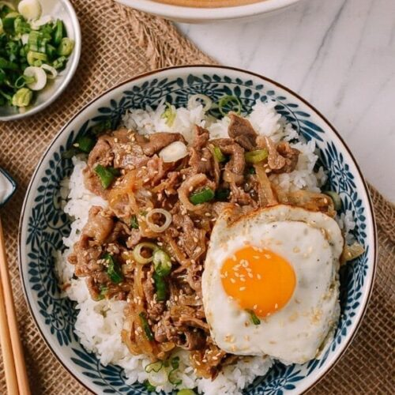

Gyudon

Description
Gyudon is a Japanese meal which is a bowl of rice with onions and thinly sliced beef which are cooked in marin and soy sauce.
Gyudon has a sweet and savory flavor. It is good served with an egg on top.
Ingredients
- vegetable oil
- 2 medium onions
- 1 pound thinly sliced beef
- 2 teaspoons sugar
- 2 tablespoons mirin
- 2 tablespoons soy sauce
- 1 cup dashi stock
- 4 eggs
- 4 cups cooked white rice
- 1 scallion
- 2 teaspoons toasted sesame seeds
Steps
- Heat 2 tablespoons oil in a large skillet over medium high heat, and cook the sliced onions for about 10 minutes, stirring often.
- Add the beef and sugar, and cook until the beef is slightly browned.
- Add the mirin, soy sauce, and stock.
- Bring to a simmer, and cook for about 10-15 minutes to reduce the stock into a thin sauce.
- Serve over rice.